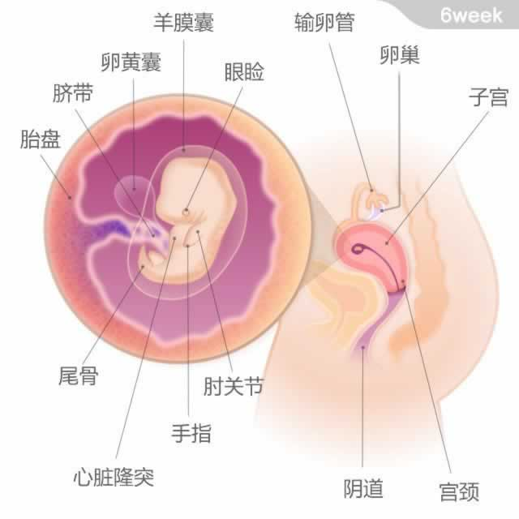

 胎宝宝有一粒蓝莓大小，从头部到臀部的长度为4~5毫米。 本周，胎宝宝有了些“人”的模样。小尾巴开始消失。他的眼睑正在形成，隐约有了鼻孔，嘴唇、牙齿的摸样，口腔内部也正在成形，耳朵继续发育。宝宝的胳膊在肘部微微弯向心脏，手脚的痕迹开始显现。 在这一周里，胎儿的心脏已经分化出左右两腔。他的心跳很快，可以达到每分钟150次。肝、肾等重要器官都在迅速发育。这个阶段的胎宝宝非常脆弱，因此你要注意避免直接接触任何有潜在危险的化学品，如杀虫剂、油漆、洁厕灵等。